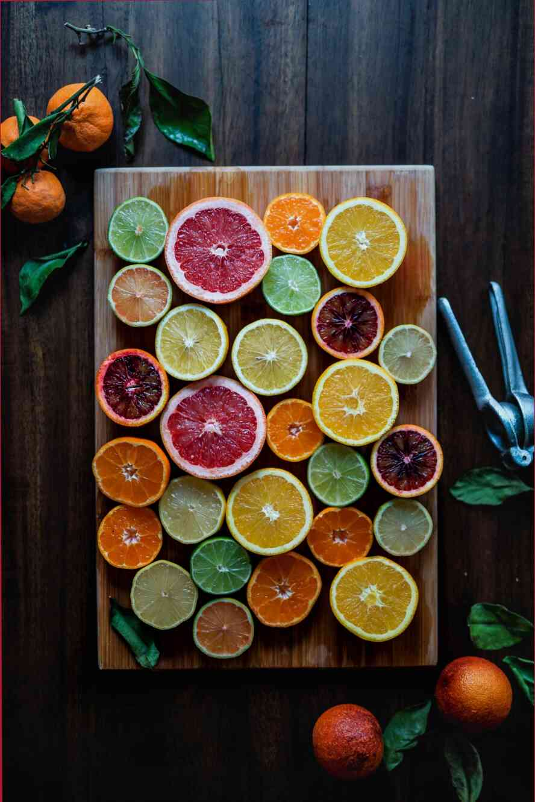

Fennel - what are the benefits of its seeds? Black radish (Rhododendron black, radish yellow, etc.), especially black radish, is an amazing root vegetable. It is truly amazing, its taste and aroma are unrecognizable to us. Moreover, it has such a pleasant taste, which is also characteristic of many useful products. About the benefits of black radish, it is enough to know this: * The amount of fiber and antioxidants in black radish seeds. * The benefit of riboflavin (vitamin B9). As already mentioned, it is found in a number of useful products, such as: fennel seeds, horseradish (dill), caraway seeds, oranges, grapes, nuts, dried apricots, and more. * The importance of potassium (salt). This mineral is very important for the heart and blood vessels, and is important even for the embryo. Its lack leads to anemia and a whole host of problems. Especially often, potassium deficiency is associated with anemia, muscle and joint disorders, diarrhea, and kidney and gallbladder inflammation. With a healthy electrolyte balance, the nervous system is quickly restored, the risk of diabetes and many other diseases of the digestive tract, including kidney and gallbladder diseases. Important!* If you are prone to seizures, you should be aware that these seeds are very bitter. They are not recommended to eat with an empty stomach.And also:* If you have gallbladder inflammation, chronic kidney failure, and other serious problems, you should not use these seeds.4 spices for arthritis. If you have gallbladder and kidney disease, you should not use these seeds.2 main causes of female loneliness.These spices have a great effect on the body. They provide us with amino acids, vitamins, fiber, minerals, and other important substances. The moreor less often they are included in our daily menu, the better for our health. This article carries for informational purposes only. Please consult your doctor before using this information.If you liked our article, we will be happy if you share it on your social media pages.